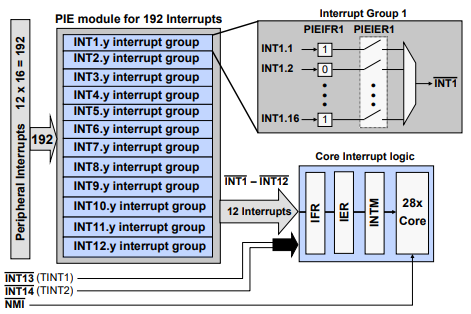
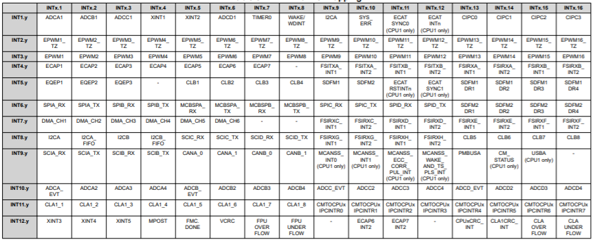
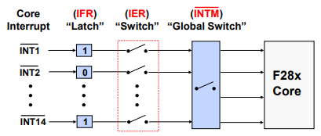
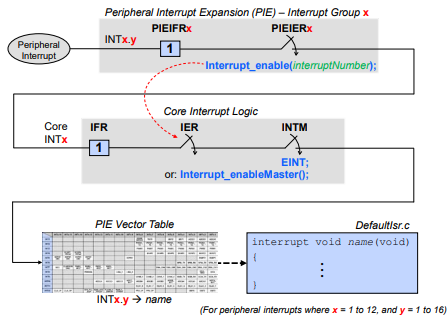
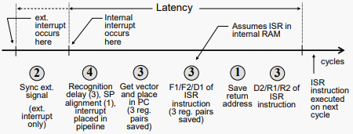

Interrupts#
An interrupt is a response by the processor to an event that needs attention. The processor executes instructions that are defined within the interrupt service routine (ISR) as soon as is capable, and then goes back to normal operational tasks. Unlike idle loops where code waits for an event to occur, interrupts provide the opportunity to have non-idle code loops that execute based on the CPU’s availability and priority of tasks.
Interrupt Architecture within C2000 devices#
Refer to the ‘Device Interrupt Architecture’ figure of the device’s Technical Reference Manual (TRM) for a visual representation of the interrupt architecture described below.
The internal interrupt sources include the general purpose timers 0, 1, and 2, and all of the peripherals on the device.
External interrupt sources include the five external interrupt lines. From the Input X-BAR, INPUT4 maps to XINT1, INPUT5 maps to XINT2, INPUT6 maps to XINT3, INPUT13 maps to XINT4, and INPUT14 maps to XINT5.
The Peripheral Interrupt Expansion block, known as the PIE block, is used to expand the core interrupt capability. Timer 0 is directly connected to the PIE block as well as the WAKEINT signal from the Watchdog module. For dual core devices, each core has its own PIE block and the XINTx signals are shared between the two cores as well as the peripheral interrupts, and inter-processor (IPC) signals.
Note:
On the F2838x family of devices, CM_STATUS (CPU1 only), SYS_ERR, and CPUx.CRC flags are also mapped to the PIE block
The core has 14 interrupt lines (for dual core devices, each core has its own set of 14 interrupt lines). Interrupts 1-12 come from the PIE block, interrupt 13 is mapped to Timer 1 and interrupt 14 is mapped to Timer 2. The NMI module is directly connected to the NMI interrupt which is mapped to the core.
Note:
ERAD is directly connected to RTOSINT for the following device families:
F28004x
F28002x
F28003x
F280013x
F280015x
Peripheral Interrupt Expansion (PIE)#

A Peripheral Interrupt Expansion (PIE) module multiplexes up to sixteen peripheral interrupts into each of the twelve CPU interrupt lines, further expanding support for up to 192 peripheral interrupt signals.
The PIE module also expands the interrupt vector table, allowing each unique interrupt signal to have its own interrupt service routine (ISR), permitting the CPU to support a large number of peripherals.
The PIE block consists of 12 groups. Within each group, there are sixteen interrupt sources. Each group has a PIE interrupt enable register and a PIE interrupt flag register.
Any interrupt lines that do not go through the PIE block are directly connected to the CPU like Timer 1/2 and NMI.
Note:
To view the PIE block mapping refer to the ‘PIE Channel Mapping’ table within the device’s Technical Reference Manual (TRM). The figure below shows an example of the PIE channel mapping for the F2838x device.

The PIE assignment table maps each peripheral interrupt to the unique vector location for that interrupt service routine. The interrupt numbers on the left (rows) represent the twelve core group interrupt lines and the interrupt numbers across the top (columns) represent the channel number within the core group interrupt line.
Each of the 12 PIE groups has a 16-bit flag register (PIEIFRx), a 16-bit enable register (PIEIERx), and a bit field in the PIE acknowledge register (PIEACK) which acts as a common interrupt mask for the entire group.
For a peripheral interrupt to propagate to the CPU, the appropriate PIEIFR must be set, the PIEIER enabled, the CPU IFR set, the IER enabled, and the INTM enabled. Note that some peripherals can have multiple events trigger the same interrupt signal, and the cause of the interrupt can be determined by reading the peripheral’s status register.
The enable PIE bit in the PIECTRL register is used to activate the PIE module. Note that when using the Driverlib function to enable and disable interrupts, both the PIEIER and CPU core IER registers are modified.
Driverlib functions to modify both the PIEIER and core IER registers:
Interrupt_enable(interruptNumber);
Interrupt_disable(interruptNumber);
PIE Block Initialization#
Two separate functions are called to initialize the interrupt module and PIE block.
Interrupt_initModule();
Interrupt_initVectorTable();
During processor initialization the interrupt vectors, as mapped in the PIE interrupt mapping table, are copied to the PIE RAM and then the PIE module is enabled by setting ENPIE to ‘1’.
When the CPU receives an interrupt, the vector address of the ISR is fetched from the PIE RAM, and the interrupt with the highest priority that is both flagged and enabled is executed.
Priority is determined by the location within the interrupt vector table. The lowest numbered interrupt has the highest priority when multiple interrupts are pending.
In summary, the PIE initialization code flow is as follows:
After the device is reset and execution of the boot code is completed, the selected boot option determines the code entry point.
The CodeStartBranch.asm file has a long branch instruction to the entry point of the runtime support library. After the runtime support library completes execution, main is called.
In main, a function is called to initialize the interrupt process and enable the PIE module.
When the CPU receives an interrupt, the vector address of the ISR is fetched from the PIE RAM, and the interrupt with the highest priority that is both flagged and enabled is executed.
Priority is determined by the location within the interrupt vector table.
Interrupt Processing#

By using a series of flag and enable registers, the CPU can be configured to service one interrupt while others remain pending, or perhaps disabled when servicing certain critical tasks.
Interrupt Flag Register (IFR): When an interrupt signal occurs on a core line, IFR for that core line is set.
Interrupt Enable Register (IER): If the appropriate IER is enabled for the desired core line and INTM is enabled, the interrupt signal will propagate to the core.
Interrupt Global Mask (INTM): This switch is a global switch that allows for the interrupts to propagate to the core.
In order to program a task for the interrupt, an interrupt service routine (ISR) can be linked to an interrupt.
Once the ISR starts processing the interrupt, the INTM bit is disabled to prevent nested interrupts.
The IFR is cleared and ready for the next interrupt signal.
When the interrupt servicing is completed, the INTM bit is automatically enabled, allowing the next interrupt to be serviced. Notice that when the INTM bit is ‘0’, the “switch” is closed and enabled. When the bit is ‘1’, the “switch” is open and disabled. The INTM bit in the status register is managed by using a Driverlib function or in-line assembly instructions (macro).
The IER is managed by enabling and disabling Driverlib parameter values.
Interrupt Flag Register (IFR)#
Compiler generates atomic instructions (non-interruptible) for setting/clearing IFR
If another interrupt occurs when writing to the IFR, the interrupt has priority.
The bits of the IFR register are cleared when the interrupt is acknowledged by CPU through the PIEACK register (this is usually done at the end of the interrupt service routine (ISR)).
Driverlib function used to acknowledge PIE group:
// group parameter is a logical OR of the values: INTERRUPT_ACK_GROUPx,
// where x is the interrupt number between 1 and 12
// Acknowledges group and clears any interrupt flag within group
// Required to receive further interrupts in PIE group (done in ISR)
Interrupt_clearACKGroup(group);
The IFR register is cleared on reset
Interrupt Enable Register (IER)#
Compiler generates atomic instructions (non-interruptible) for setting/clearing IER
IER is cleared on reset
Driverlib functions used to modify IER:
// cpuInterrupt parameter is a logical OR of the values:
// INTERRUPT_CPU_INTx, where x is the interrupt number between 1 and 14
// INTERRUPT_CPU_DLOGINT (CPU Data Log Interrupt)
// INTERRUPT_CPU_RTOSINT (CPU RTOS Interrupt)
Interrupt_enableInCPU(cpuInterrupt);
Interrupt_disableInCPU(cpuInterrupt);
Interrupt Global Mask Bit (INTM)#
INTM used to globally enable/disable interrupts:
• Enable: INTM = 0
• Disable: INTM = 1 (reset value)
Driverlib functions used to modify INTM:
Interrupt_enableGlobal();
Interrupt_disableGlobal();
Alternatively the following macros can be used:
EINT; //defined as - asm(" clrc INTM");
DINT; //defined as - asm(" setc INTM");
Interrupt Signal Flow-Summary#
In summary, the following steps occur during an interrupt process:
A peripheral interrupt is generated and the PIE interrupt flag register is set. If the PIE interrupt enable register is enabled, then the core interrupt flag register will be set.
If the core interrupt enable register and global interrupt mask are enabled, the PIE vector table will redirect the code to the interrupt service routine.

Interrupt Response and Latency#
Interrupt Response - Hardware Sequence#
CPU Action |
Description |
|---|---|
Registers -> stack |
14 Register words auto saved |
0 -> IFR (bit) |
Clear corresponding IFR bit |
0 -> IER (bit) |
Clear corresponding IER bit |
1 -> INTM/DBGM |
Disable global ints/debug events |
Vector -> PC |
Loads PC with int vector address |
Clear other status bit |
Clear LOOP, EALLOW, IDLESTAT |
Note: some actions occur simultaneously, none are interruptible
Interrupt Latency#
Interrupt latency is an important factor in understanding the response time of a real-time system. The typical method by which interrupt latency of a system is assessed is the number of cycles it takes for the hardware to respond to an interrupt and branch to the interrupt vector (hardware latch and respond).

Minimum latency (to when real work occurs in the ISR):
Internal interrupts: 14 cycles
External interrupts: 16 cycles
Maximum latency: Depends on wait states, INTM, etc.
Feedback
Please provide any feedback you may have about the content within C2000 Academy to: c2000_academy_feedback@list.ti.com